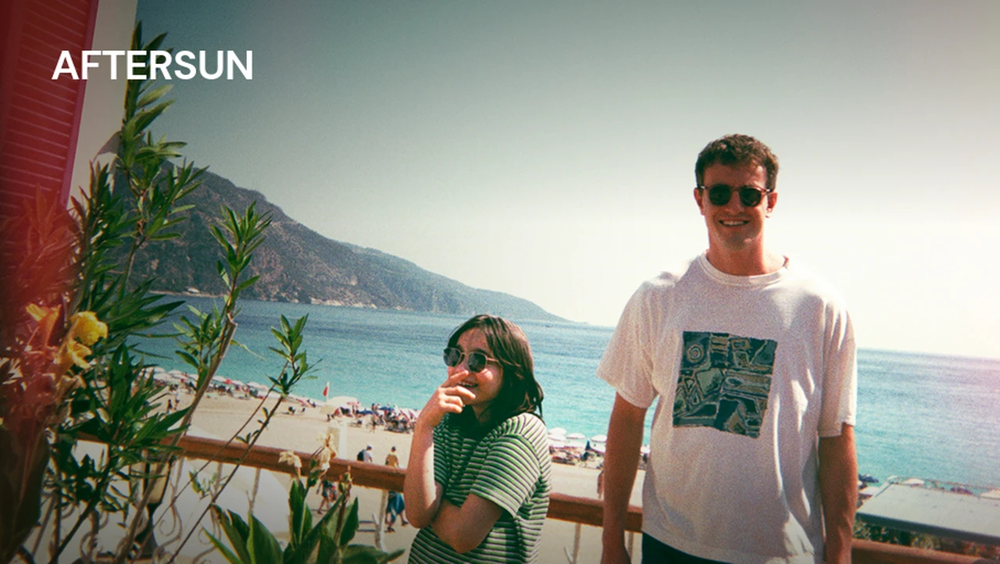

Aftersun (2022)
Sophie is a grown woman looking back at the last vacation she had with her father, when she was eleven. The film mixes her memories with old camcorder footage from the trip. It’s a normal holiday: swimming, games, and dinners. But the small moments, like her dad going quiet or staying alone, hint that he is struggling in a way she was too young to understand. What I like most is how the film trusts you to notice these details instead of explaining them. It’s slow and gentle, and it hits harder the more you think about it afterward. The scene that moved me the most was when Sophie’s dad sends her off at the airport and walks out through the door. It made me feel so many emotions. Watch it if you’ve ever looked back on a memory and understood it differently as you grew older.